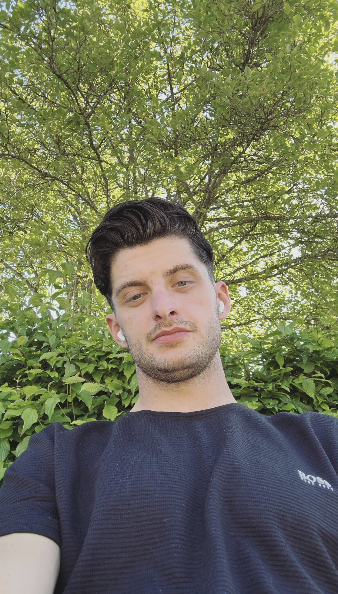

Hi, I'm Lulzim.
Welcome to my personal homepage! I'm passionate about web development and love building creative projects.
About
I was born in a small town in germany called Freudenstadt. If you translate it to english it means "City of Joy". Even though I dont really understand why it is called that way, since there is nothing joyful about it. But I guess that is just a name. It stuck with me to the point where I wanted to get to the point where I can grow up, leave one day and tell that city "I found joy". I´m currently studying computer science at the mobile university Willhelm Büchner Hochschule in Darmstadt. I love to code and create things that are useful and fun. I also love to learn new things and improve my skills. Even thoough I´m not where I want to be yet and the job market was kind of harsh to me, I´m still motivated to keep going and reach my goals. I´m currently looking for an internship or a job in the field of web development or software development. If you are interested in working with me, please feel free to contact me. Thank you for visiting my homepage and I hope you enjoy it! This is a placeholder for the about section. Here you can add information about yourself, your background, and your interests.
Music to listen to while coding!Projects
Here you'll find a selection of my recent work and side projects. Stay tuned for updates!
Contact
This is a placeholder for the contact section. Feel free to reach out to me through email or social media.